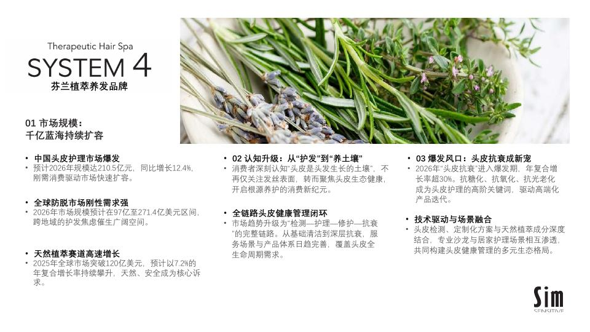
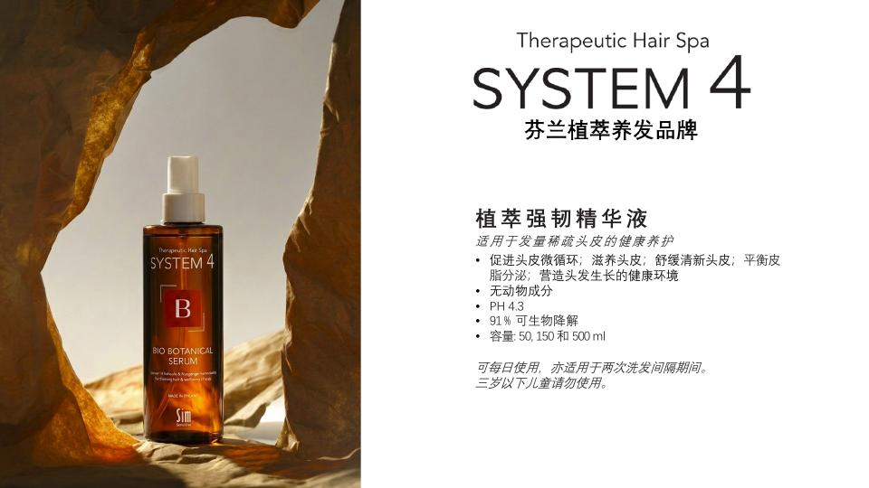

STRATEGY × AI TRANSFORMATION
System 4 中国市场
战略诊断与 AI 机会方案
从“多做内容”走向“用证据验证品牌、用 Agent 放大增长”的 180 天行动路线
基于 6 场团队访谈、官方品牌资料与 Sim Sensitive 官方信息 · 2026.08
执行摘要
System 4 的首要任务不是扩大声量，而是证明“谁为什么选择它”
6场跨职能访谈，覆盖品牌、PR、电商、设计、销售与后台
42条可追溯证据，区分事实、陈述与假设
11个候选 Agent 进入统一 100 分评估
6个首波 Agent，组成增长学习与运营可信度双闭环
建议把中国上市定义为一项 产品市场匹配实验：先建立可信事实、真实反馈与可归因增长，再扩大投放和渠道。
证据：E-001、E-006、E-016、E-032、E-035；本报告未将访谈目标视为预测。
证据方法
每个结论都先回答：它是事实、共识、单方观点，还是待验证假设？
F1一手正式资料
官网、官方产品页、品牌 PDF。可描述官方主张，但强功效仍需外部与法规验证。
F2多场一致陈述
不同角色或不同会议对同一现状的交叉印证，作为较强内部证据。
F3单方陈述
目标、计划、数据和观点用于提出行动，不直接当成公司事实。
H待验证假设
必须配置验证方法、负责人、指标和停止条件，未通过不扩大投入。
“2 周内 90% 使用者脱发改善并停止”等强功效表述已进入高风险待验证区，不进入自动发布链路。
来源：System 4 官方 PDF；研究与证据 QC 报告。证据：E-010。
品牌与项目基础
System 4 拥有清晰的产品基础，但中国市场表达仍需要做减法
事实基础
Finnish Scalp Therapy、芬兰研发制造、Bio-Series 三步护理，是可以被统一沉淀的品牌资产。
待验证表达
“北欧、植萃、养护、专业、防脱、控油、去屑、止痒”同时出现，消费者尚未告诉我们哪一个最能驱动理解与购买。
先确定一个用户问题，再让产品、内容、渠道和 Agent 围绕同一问题学习。
来源：Sim Sensitive 官方网站、官方 PDF、访谈 01；证据：E-001–E-007、E-017、E-037。

01 · STRATEGIC DIAGNOSIS
战略诊断：把上市变成一套可学习的经营系统
方向不是按部门增加 AI 工具，而是围绕产品市场匹配重构证据、增长与运营闭环。
上市窗口
时间表越紧，越不能让事实、内容、订单与反馈继续分散
NOW跨境首批货
宁波跨境仓、日上/京东跨境与小红书店构成近期验证路径。
LAUNCH内容与发布活动
达人预热、活动和官网需要在同一事实包与内容规则下运行。
NEXT一般贸易与线下
注册、价值主张、供应和复购通过阶段门后，再扩展旗舰店与专业渠道。
上市前 30 天的关键交付不是更多海报，而是品牌事实包、实验台账、资产库和决策节奏。
访谈 01、02、05；证据：E-011–E-015、E-019、E-034。
战略问题
从“首年做多大”倒推到四个必须先被验证的经营问题
谁
哪类用户已感知头皮问题，但仍愿意通过日常护理改善？
为什么
芬兰、植萃、专业与三步护理中，什么真正形成价格理由？
如何购买
内容、试用、咨询、专业体验和交易如何连接而不掉数？
为何复购
什么变化可感知、使用能坚持、组合值得持续购买？
销售目标是管理层愿景，不是预测；只有把它拆成可验证假设，才可能成为执行系统。
访谈 01；证据：E-016、E-037–E-039。
Where to Play
先在能产生高质量反馈的场域赢得认知，再扩展分销
01 · CONTENT + COMMERCE跨境电商与小红书
承担首发交易、概念测试与评论学习；所有内容与订单共享实验 ID。
02 · HIGH TOUCH精选头疗 / SPA / 沙龙
承担诊断、示范和三步体验；只选择愿意提供 sell-through 的伙伴。
03 · SCALE一般贸易与选择性零售
在价值主张、供应和复购证据通过 Gate 后扩大。
证据：E-005–E-007、E-015、E-034、E-035、E-042。
How to Win
不是用“北欧”讲一个漂亮故事，而是用证据驱动专业教育
统一事实
产品、成分、用法、可用宣称和来源进入单一知识系统。
聚焦问题
从真实头皮状态进入，用旅行装、三步体验和反馈建立价格理由。
循环学习
达人、内容、体验、转化与复购形成可回收的数据闭环。
渠道卖出能力高于铺货数量
选择高配合伙伴，用现场示范和激励弥补弱管理权。
内部提效为增长释放时间
先自动化达人研究、订单核对、素材检索和周报等高频工作。
证据：E-001–E-010、E-018、E-028–E-031、E-036。
战略张力 01
高端溢价不能由标签支撑，必须由体验与复购证据支撑
高客单与三步组合进口、专业规格与完整护理路径具备高端产品结构。
VS
中国认知尚未形成消费者还未验证“北欧、植萃、专业”中的首要购买理由。
行动：旅行装/单品/套装对照实验，追踪理解、首购、使用完成与 30/60 天复购。
证据：E-006、E-007、E-016、E-017、E-039。
战略张力 02
产品需要专业解释，但外部销售并不受品牌直接管理
需要诊断与示范三步护理、使用时长和头皮状态都需要顾问式教育。
VS
弱管理权与低培训采纳外部销售不一定观看资料，内容无法替代激励和现场成功。
行动：Sales Agent 先服务自有团队与 2–3 个高配合试点伙伴，把 sell-through 数据作为合作前提。
访谈 06；证据：E-006、E-031、E-042。
战略张力 03
快速上市与碎片化数据同时发生，越忙越容易失去学习
多条任务并行注册、供货、活动、达人、官网、电商和渠道同时推进。
VS
资料与过程未留痕微信、Excel、个人文件和平台后台无法形成统一证据。
行动：上市 PMO 不只追任务，而要统一事实、实验 ID、来源、责任人与决策日志。
访谈 01、02、03；证据：E-011–E-015、E-019、E-023、E-024、E-032。
7S 组织诊断
AI 原生不是每个人会用工具，而是所有人共同运行一套证据系统
| 7S | 当前观察 | 180 天调整 |
|---|
| Strategy | 目标、渠道、标签多，验证顺序不清 | 以 PMF 与复购证据为阶段目标 |
| Structure | 多人多职能，责任交叉 | 增长办公室 + 单一业务 Owner |
| Systems | 微信、Excel、平台、ERP 分散 | 事实包、实验 ID、数据字典 |
| Shared Values | 认可 AI 原生与留痕 | 将可验证、可追溯写入标准 |
| Skills | 已会对话与出图 | 补齐实验、数据、Agent 与 Eval |
| Style | 经验与即时沟通驱动 | 周度证据复盘与来源引用 |
| Staff | 精干、一人多职 | 自动化重复劳动，保留人工判断 |
证据：E-018–E-027、E-032、E-033、E-036。
增长闭环
每一轮营销都必须产生下一轮可以复用的证据
统一实验 ID
与证据回写
洞察
问题与人群
内容
一个主张
流量
来源可识别
咨询 / 体验
状态可记录
转化
关联 SKU
复购
完成与留存
证据
更新知识
当前断点在数据回收与复购证据；证据：E-020、E-029、E-035。
02 · AI OPPORTUNITY PORTFOLIO
AI 机会：不按愿望清单部署，按价值、数据与采纳筛选
11 个候选 Agent 使用同一套 100 分模型，并对合规、脏数据、平台依赖和弱管理权扣分。
100 分决策模型
高价值只是入场券，真实样本与业务 Owner 才决定能否开工
战略与收入价值 · 25
是否直接支持上市验证、增长、复购或经营质量？
频率与人力成本 · 15
是否高频、重复、耗时或错误成本高？
上市紧迫性 · 10
是否必须在首发和前 60 天具备？
数据准备度 · 15
是否已有真实样本和明确字段？
技术可行性 · 15
60 天内能否做出可审计 MVP？
采纳与 Owner · 10
是否有人负责使用和审批？
可复制性 · 10
是否能跨渠道、品牌与团队复用？
风险扣分：合规、隐私、平台依赖、脏数据、版权、弱管理权与虚假精确。
Agent 全景
11 个候选 Agent 中，6 个进入首波，4 个等待底座成熟，1 个延后
| Agent | 最终分 | 风险扣分 | 决策 | 主要理由 |
|---|
| A-01 品牌与产品证据 | 91 | 3 | 首波 | 所有生成与销售动作的共同底座 |
| A-04 订单与库存验证 | 88 | 2 | 首波 | 高频、规则明确、真实样本可得 |
| A-02 PR/KOL 智能 | 86 | 5 | 首波 | 直接支持上市且人工耗时高 |
| A-07 消费者反馈与 PMF | 84 | 4 | 首波 | 回答“谁为什么选择” |
| A-03 多渠道内容 + Eval | 82 | 7 | 首波 | 在事实与合规 Gate 后放大 |
| A-09 上市 PMO | 80 | 7 | 首波 | 其余 Agent 的治理前提 |
| A-06 / A-10 / A-08 / A-05 | 74–78 | 3–9 | 第二波 | 等待数据、规范或渠道 Owner |
| A-11 需求与补货预测 | 63 | 8 | 储备 | 上市初期数据不足 |
完整评分见 Case `outputs/priority-matrix.md`。
优先级矩阵
首波同时覆盖增长学习与内部效率，避免“只做内容”或“只做后台”
数据与技术准备度 →战略价值与紧迫性 →A-01 证据
A-04 库存
A-02 KOL
A-07 VOC
A-03 内容
A-09 PMO
A-06 洞察
A-10 视觉
A-08 官网
A-05 渠道
A-11 预测
象限用于组合判断；最终排序以 100 分模型与硬 Gate 为准。
A-01 · 首波基础
品牌与产品证据 Agent：让每句话都知道“来自哪里、能否对外”
91Product Evidence & Brand Knowledge
把官网、官方 PDF、注册备案、检测、FAQ 与品牌规范转化为单一事实源。
输出
事实卡、产品知识、可用/禁用宣称、引用与待确认问题。
人工审批点
品牌与法规批准事实包；强功效永不自动发布。
Eval
引用覆盖 ≥95%，高风险宣称拦截 100%，事实错误趋近于零。
业务价值
降低返工与合规风险，为内容、官网、销售和客服提供底座。
证据：E-001–E-010、E-032。
A-02 · 首波增长
PR/KOL Agent：把“找达人”升级为可累积的 campaign memory
86PR/KOL Intelligence & Campaign Memory
覆盖候选、匹配、联系、合作、上线、评论、转化与投后复盘。
触发与输入
新 campaign、候选达人、内容样本、合作条件、历史合作和平台结果。
输出
短名单、评分依据、沟通草稿、合作台账与下轮建议。
人工审批点
PR 决定联系、合作和预算；Agent 只做辅助判断。
Eval
100 个候选盲测：工时下降 50%，匹配率不低于人工基线。
访谈 01、05；证据：E-028、E-029、E-035、E-040。
A-03 · 首波执行
内容 Agent 的价值不是“写得快”，而是品牌一致、宣称合规、结果可回收
82Multi-channel Content Studio + Eval
从同一事实包生成小红书、官网、电商页与销售物料，并记录版本。
输入
批准 brief、A-01 事实包、平台格式、品牌视觉与素材来源。
输出
多平台草稿、品牌/宣称 Eval 报告和版本资产。
人工审批点
品牌/PR 最终发布；医学和功效内容进入专业审核。
Eval
首稿通过率、周期、返工、违规命中、资产复用与业务结果。
证据：E-010、E-025–E-027、E-032。
A-04 · 首波效率
订单与库存 Agent：先用影子运行证明准确，再考虑系统动作
88Order & Inventory Verification
读取订单 Excel 或截图，跨仓查询 SKU 与数量，给出可追溯核对结果。
输出
可发、缺货、待确认、仓库组合、异常和操作日志。
人工审批点
后台确认后再建单或回复；首阶段不自动扣库存。
Eval
30 份历史订单回放 + 两周影子运行，准确率 Gate 为 99%。
停止条件
条码、库存时效或仓库规则无法稳定，不进入生产。
访谈 02、06；证据：E-018、E-030、E-036、E-041。
A-07 · 首波学习
消费者反馈 Agent：让每份试用与评论都回答 PMF，而不是只做情绪总结
84Consumer Feedback & PMF
连接样品、问卷、评论、咨询、订单、退款与复购，持续更新品牌假设。
输出
问题分群、价值证据、反证、产品建议和待访谈用户。
人工审批点
品牌批准结论；医学问题转专业审核。
Eval
反馈回收率、订单关联率、洞察到行动时间、复购差异。
风险
小样本偏差、隐私与“只看正反馈”，必须保留反证。
证据：E-035、E-037–E-039。
A-09 · 首波治理
上市 PMO Agent：把“很多人在忙”变成“每周有证据地做决定”
80Launch PMO & Weekly Decision Brief
统一里程碑、实验、风险、决策、责任人与截止时间。
输出
单页周报、风险雷达、决策日志和行动清单。
人工审批点
项目负责人确认优先级、资源和阶段门。
Eval
逾期任务、决策闭环、会议准备时长、风险提前量。
定位
不是任务机器人，而是其余 Agent 的治理与证据入口。
证据：E-011–E-015、E-022–E-024。
首波系统架构
六个 Agent 共享同一组数据对象，不能形成六个新孤岛
01品牌事实
来源、宣称、产品、用法、版本。
02Campaign
目标、假设、人群、渠道、预算边界。
03内容资产
brief、草稿、审核、发布与结果。
04达人 / 样品
候选、联系、寄送、体验与反馈。
05订单 / 库存
SKU、渠道、可售、履约与异常。
06决策证据
指标、反证、责任人、阶段门。
统一键：实验 ID、SKU、渠道、内容 ID、来源、审批人、版本与时间。
首波组合：A-01、A-02、A-03、A-04、A-07、A-09。

03 · 180-DAY ROADMAP
六个月路线图：三道阶段门，先证明，再放大
每 60 天用业务结果、准确性与团队采纳决定继续、调整或停止。
0-60 天
先建立可信上市底座，再跑通一个增长闭环与一个效率闭环
0–60基础与双试点
交付
- 品牌事实包与宣称 Gate
- 上市总表、实验 ID、决策日志
- 达人筛选与结果回收 MVP
- 一轮内容—样品—反馈实验
- 30 份订单回放 + 两周影子运行
Gate
引用覆盖 ≥95%；高风险宣称拦截 100%；达人匹配不低于人工；库存建议准确率 ≥99%。
停止条件
无人审批事实、拿不到真实样本、库存数据持续不准或团队绕开统一台账。
Owner：System 4 中国项目负责人；品牌、PR、电商、后台各一名数据 Owner。
61-120 天
把首发反馈转化为可重复的内容与经营系统
61–120学习与规模化
交付
- 达人合作后评分与 campaign memory
- 多平台内容与品牌/宣称 Eval
- 评论、咨询、订单、退款与复购关联
- 电商周度经营洞察
- 视觉模板与品牌 QC
Gate
80% 新 campaign 使用实验 ID；80% 已发布内容回收结果；PMF 假设出现正反证。
停止条件
内容增加但有效咨询/转化无改善；数据无法关联；AI 建议连续两轮不能被业务验证。
阶段决定：保留有效概念和渠道组合，淘汰低效内容与达人类型。
121-180 天
只把已验证能力复制到渠道与经营决策
121–180复制与组织化
交付
- 2–3 个专业渠道伙伴试点
- 官网与 GEO 更新机制
- 订单库存从影子运行到半自动
- 有足够数据才启动补货预测
- 月度战略回顾与 Agent Eval
Gate
渠道提供 sell-through；关键 Agent 有 Owner、SOP、审批与回滚；预测优于简单基线。
停止条件
伙伴不提供数据、ERP 不准、预测无增益、团队无人维护。
阶段决定：选择可跨品牌复用的 Agent，关闭无业务产出的试点。
Agent Eval
每个 Agent 都要同时过六道关，不能只展示一个“看起来不错”的 Demo
业务结果
是否改变转化、复购、工时、准确性、库存或决策速度？
任务准确性
是否在真实样本、边界情况和历史回放中达到 Gate？
品牌与合规
是否引用事实、拦截禁用宣称、记录审批与版本？
数据可追溯
输入、来源、推理、输出、用户修正能否审计？
用户采纳
业务 Owner 是否持续使用，还是回到微信和 Excel？
可运维性
异常能否发现、回滚和修复，团队能否接手维护？
唯一有效的成功定义：在真实流程中持续产生可度量的业务结果。
评估周期：任务级持续 Eval、双周 Sprint 评审、每 60 天阶段门。
服务方案 · 商务条款另行沟通
System 4 AI 原生品牌增长办公室：把战略、FDE 与组织能力放在同一张桌上
联合工作目标
MindsLeap 担任外部战略大脑、Agent 产品经理与实施教练；System 4 团队保留品牌、产品、法规、渠道和经营责任。
六个月结果：可信事实系统、可追溯增长闭环、上市决策机制、4–6 个真实 Eval Agent，以及能持续迭代 Agent 的核心团队。
每周证据、风险、任务与 Agent 使用复盘
双周Sprint 评审，发布、修正或回滚
每月管理层战略与 PMF 校准
每 60 天阶段门决定扩大、调整或停止
服务范围：战略校准、知识与数据治理、FDE 交付、增长实验、团队训练与 Agent Eval。
管理层下一步
五个决定一旦冻结，项目即可进入 0–30 天上市关键子集
01批准品牌事实包 Owner
品牌、产品、法规分别由谁签字。
确定首个目标问题
选择一个人群与头皮问题进入概念测试。
开放真实样本
达人、内容、订单、库存与用户反馈样本。
指定单一项目负责人
对跨部门节奏、数据与阶段门负责。
接受停止机制
没有业务结果的 Agent 不扩展、不包装。
启动双试点
增长：知识 + KOL + 内容 + VOC；效率：订单库存。
System 4 的 AI 原生起点，不是拥有更多 AI，而是让每一次上市行动都留下下一次可用的证据。
MindsLeap · System 4 中国市场战略诊断与 AI 机会方案